Results Output for Question 1
Last updated: 2021-01-26
Checks: 6 1
Knit directory: esoph-micro-cancer-workflow/
This reproducible R Markdown analysis was created with workflowr (version 1.6.2). The Checks tab describes the reproducibility checks that were applied when the results were created. The Past versions tab lists the development history.
The R Markdown file has unstaged changes. To know which version of the R Markdown file created these results, you’ll want to first commit it to the Git repo. If you’re still working on the analysis, you can ignore this warning. When you’re finished, you can run wflow_publish to commit the R Markdown file and build the HTML.
Great job! The global environment was empty. Objects defined in the global environment can affect the analysis in your R Markdown file in unknown ways. For reproduciblity it’s best to always run the code in an empty environment.
The command set.seed(20200916) was run prior to running the code in the R Markdown file. Setting a seed ensures that any results that rely on randomness, e.g. subsampling or permutations, are reproducible.
Great job! Recording the operating system, R version, and package versions is critical for reproducibility.
Nice! There were no cached chunks for this analysis, so you can be confident that you successfully produced the results during this run.
Great job! Using relative paths to the files within your workflowr project makes it easier to run your code on other machines.
Great! You are using Git for version control. Tracking code development and connecting the code version to the results is critical for reproducibility.
The results in this page were generated with repository version 8f2ce3f. See the Past versions tab to see a history of the changes made to the R Markdown and HTML files.
Note that you need to be careful to ensure that all relevant files for the analysis have been committed to Git prior to generating the results (you can use wflow_publish or wflow_git_commit). workflowr only checks the R Markdown file, but you know if there are other scripts or data files that it depends on. Below is the status of the Git repository when the results were generated:
Ignored files:
Ignored: .Rhistory
Ignored: .Rproj.user/
Ignored: data/
Untracked files:
Untracked: analysis/slide-figures-heatmaps-dendrograms-updates.Rmd
Untracked: output/New folder/
Untracked: output/slide-5-heatmap-001.pdf
Untracked: output/slide-5-heatmap-001.png
Untracked: output/slide-6-heatmap-001.pdf
Untracked: output/slide-6-heatmap-001.png
Untracked: output/slide-7-heatmap-001.pdf
Untracked: output/slide-7-heatmap-001.png
Unstaged changes:
Modified: analysis/index.Rmd
Modified: analysis/results-question-1.Rmd
Modified: analysis/results-question-3.Rmd
Modified: code/heatmap-dendrogram-slide-5-05.R
Modified: code/load_packages.R
Modified: output/slide-10-heatmap.pdf
Modified: output/slide-10-heatmap.png
Modified: output/slide-5-heatmap-01.pdf
Modified: output/slide-5-heatmap-01.png
Modified: output/slide-5-heatmap-05.pdf
Modified: output/slide-5-heatmap-05.png
Modified: output/slide-6-heatmap-01.pdf
Modified: output/slide-6-heatmap-01.png
Modified: output/slide-6-heatmap-05.pdf
Modified: output/slide-6-heatmap-05.png
Modified: output/slide-7-heatmap-01.pdf
Modified: output/slide-7-heatmap-01.png
Modified: output/slide-7-heatmap-05.pdf
Modified: output/slide-7-heatmap-05.png
Modified: output/slide-8-heatmap.pdf
Modified: output/slide-8-heatmap.png
Modified: output/slide-9-heatmap.pdf
Modified: output/slide-9-heatmap.png
Note that any generated files, e.g. HTML, png, CSS, etc., are not included in this status report because it is ok for generated content to have uncommitted changes.
These are the previous versions of the repository in which changes were made to the R Markdown (analysis/results-question-1.Rmd) and HTML (docs/results-question-1.html) files. If you’ve configured a remote Git repository (see ?wflow_git_remote), click on the hyperlinks in the table below to view the files as they were in that past version.
| File | Version | Author | Date | Message |
|---|---|---|---|---|
| Rmd | 6585907 | noah-padgett | 2021-01-21 | updated figures with dendrogram |
| html | a79cf3a | noah-padgett | 2021-01-14 | Build site. |
| Rmd | e6b4c7f | noah-padgett | 2021-01-14 | meeting update |
| html | e6b4c7f | noah-padgett | 2021-01-14 | meeting update |
Question 1
Q1: is there a taxonomic signature shared between the barrett's samples?- Heatmap of relative abundance supervised by sample type: Barrett’s (BO), tumor-adjacent EAC-w/history of barrett’s, EAC-w/ history of barrett’s
- Stacked bar chart of phylum and genus abundance by sample type, same as above
- Additional comparison in TCGA; EAC w/history of Barrett’s vs EAC w/ no history of Barrett’s; same analyses as above
FILE HAS BEEN DEPRICATED
Summary of observations
NCI 16s data
# in long format
table(dat.16s$sample_type)
0 Barretts Only
19800 1320
EAC-adjacent tissue w/ Barretts History EAC tissues w/ Barretts History
11352 9240 dat <- dat.16s %>% filter(OTU == "Fusobacterium_nucleatum")
table(dat$sample_type)
0 Barretts Only
75 5
EAC-adjacent tissue w/ Barretts History EAC tissues w/ Barretts History
43 35 table(dat$Barretts.)
N Y
71 87 5 Barretts samples that were non-EAC tissue related.
TCGA RNAseq data
# in long format
table(dat.rna$sample_type)
0 EAC-adjacent tissue w/ Barretts History
112176 2337
EAC tissues w/ Barretts History
20254 dat <- dat.rna %>% filter(otu2 == "Fusobacterium nucleatum")
table(dat$sample_type)
0 EAC-adjacent tissue w/ Barretts History
144 3
EAC tissues w/ Barretts History
26 table(dat$Barrett.s.Esophagus.Reported)
No Not Available Yes
113 31 29 TCGA WGS data
# in long format
table(dat.wgs$sample_type)
0 EAC-adjacent tissue w/ Barretts History
100491 4674
EAC tissues w/ Barretts History
3116 dat <- dat.wgs %>% filter(otu2 == "Fusobacterium nucleatum")
table(dat$sample_type)
0 EAC-adjacent tissue w/ Barretts History
129 6
EAC tissues w/ Barretts History
4 table(dat$Barrett.s.Esophagus.Reported)
No Not Available Yes
54 47 10 EAC Barretts to No Barretts Comparison
Heatmaps
All OTUs (RA > 0.001)
plot.dat <- dat.rna %>% filter(EACcomp != "0", Abundance > 0.001)
p1 <- ggplot(plot.dat, aes(x = Patient_ID, y = Genus, fill = Abundance)) +
geom_tile()+
labs(title="TCGA RNAseq Data", subtitle = "Genus Level Data",
x = "ID/Accession Number") +
facet_grid(.~EACcomp, scales="free")+
scale_fill_gradient(low="white", high="black", trans="sqrt", limits=c(0, 0.5)) +
theme_classic()+
theme(
axis.text.x = element_text(angle = 90, hjust = 1, vjust=0.5),
strip.text.y = element_text(angle = 0)
)
p1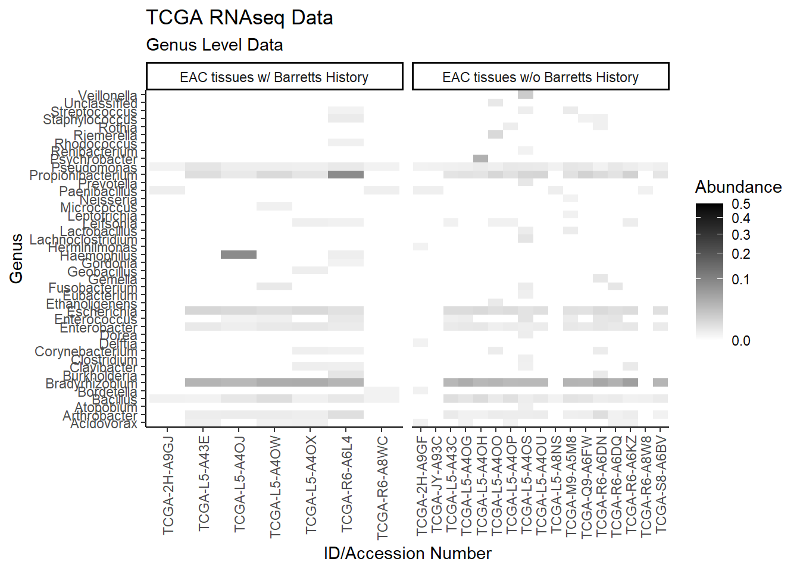
#ggsave("data/heatmap_tcgarna_genus.pdf", p1, units="in", height=23, width=16)plot.dat <- dat.rna %>% filter(EACcomp != "0") %>%
select(EACcomp, Phylum, Genus, Patient_ID, Abundance)
plot.dat <- na.omit(plot.dat)
p1 <- ggplot(plot.dat, aes(x = Patient_ID, y = Phylum, fill = Abundance)) +
geom_tile()+
labs(title="TCGA RNAseq Data", subtitle = "Phylum Level Data",
x = "ID/Accession Number") +
facet_grid(.~EACcomp, scales="free")+
scale_fill_gradient(low="white", high="black", trans="sqrt", limits=c(0, 0.001)) +
theme_classic()+
theme(
axis.text.x = element_text(angle = 90, hjust = 1, vjust=0.5),
strip.text.y = element_text(angle = 0)
)
p1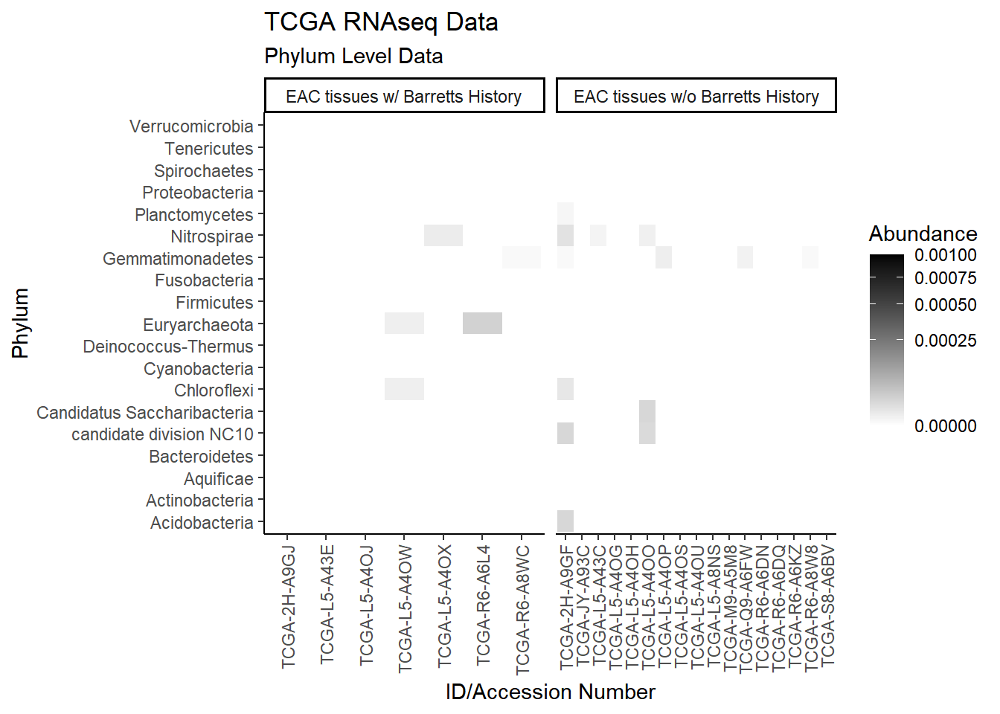
plot.dat <- dat.wgs %>% filter(EACcomp != "0", Abundance > 0.001) %>%
select(EACcomp, Phylum, Genus, Patient_ID, Abundance)
plot.dat <- na.omit(plot.dat)
p1 <- ggplot(plot.dat, aes(x = Patient_ID, y = Genus, fill = Abundance)) +
geom_tile()+
labs(title="TCGA WGS Data", subtitle = "Genus Level Data",
x = "ID/Accession Number") +
facet_grid(.~EACcomp, scales="free")+
scale_fill_gradient(low="white", high="black", trans="sqrt", limits=c(0, 0.5)) +
theme_classic()+
theme(
axis.text.x = element_text(angle = 90, hjust = 1, vjust=0.5),
strip.text.y = element_text(angle = 0)
)
p1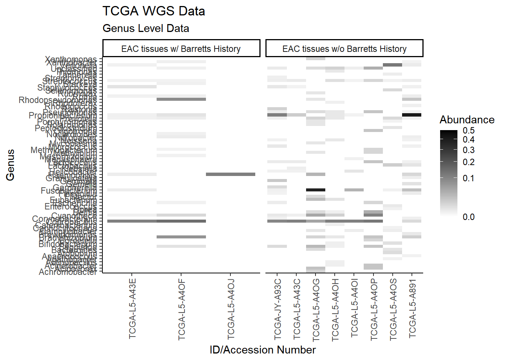
plot.dat <- dat.wgs %>% filter(EACcomp != "0") %>%
select(EACcomp, Phylum, Genus, Patient_ID, Abundance)
plot.dat <- na.omit(plot.dat)
p1 <- ggplot(plot.dat, aes(x = Patient_ID, y = Phylum, fill = Abundance)) +
geom_tile()+
labs(title="TCGA WGS Data", subtitle = "Phylum Level Data",
x = "ID/Accession Number") +
facet_grid(.~EACcomp, scales="free")+
scale_fill_gradient(low="white", high="black", trans="sqrt", limits=c(0, 0.001)) +
theme_classic()+
theme(
axis.text.x = element_text(angle = 90, hjust = 1, vjust=0.5),
strip.text.y = element_text(angle = 0)
)
p1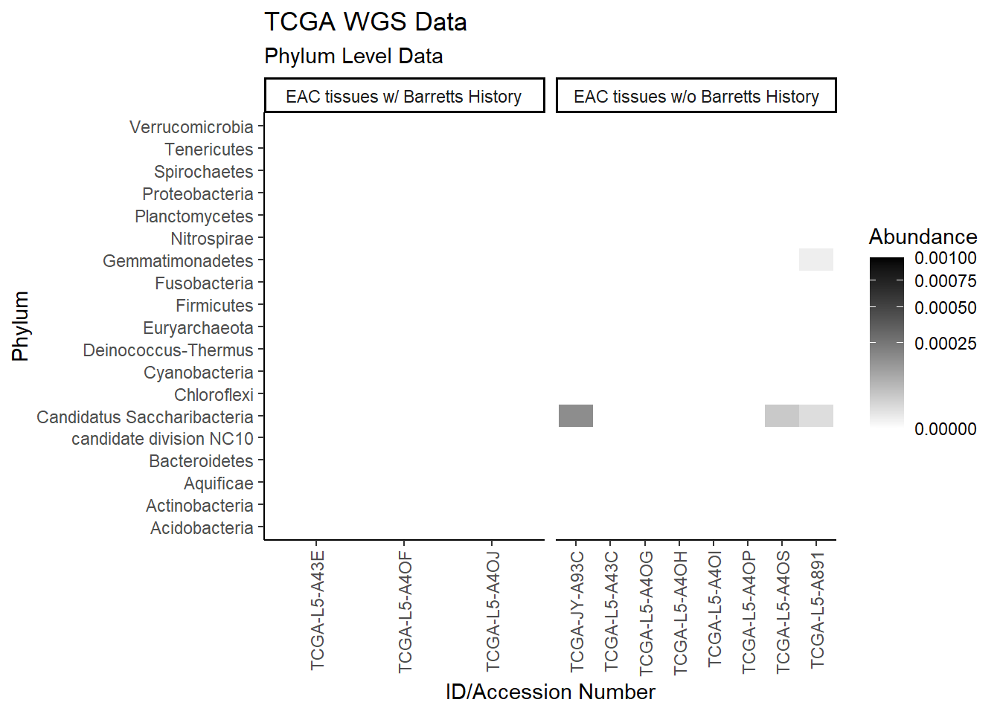
Specific OTUs
plot.dat <- dat.rna.s %>% filter(EACcomp != "0", is.na(OTU1) == F) %>%
select(EACcomp, OTU1, Patient_ID, Abundance)
plot.dat <- na.omit(plot.dat)
p1 <- ggplot(plot.dat, aes(x = Patient_ID, y = OTU1, fill = Abundance)) +
geom_tile()+
labs(title="TCGA RNAseq Data", y=NULL,
x = "ID/Accession Number") +
facet_grid(.~EACcomp, scales="free")+
scale_fill_gradient(low="white", high="black", trans="sqrt", limits=c(0, 0.1)) +
theme_classic()+
theme(
axis.text.x = element_text(angle = 90, hjust = 1, vjust=0.5),
strip.text.y = element_text(angle = 0)
)
p1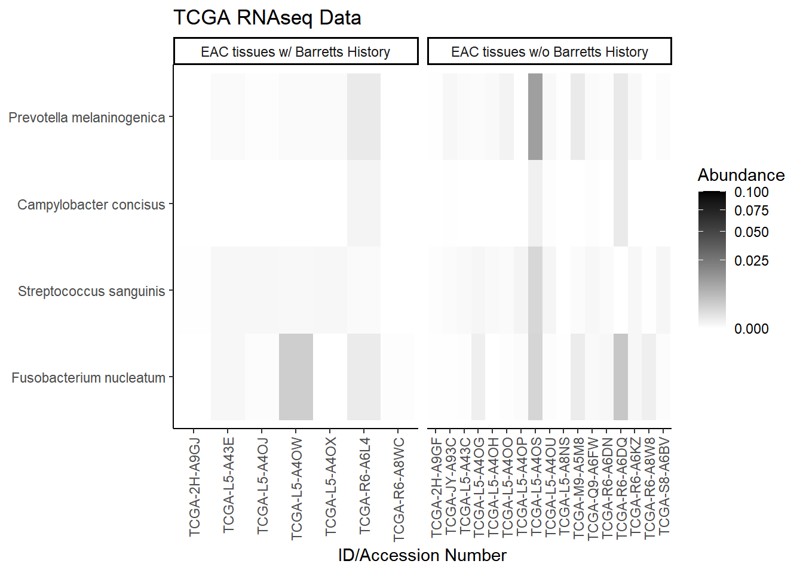
plot.dat <- dat.wgs.s %>% filter(EACcomp != "0", is.na(OTU1) == F) %>%
select(EACcomp, OTU1, Patient_ID, Abundance)
plot.dat <- na.omit(plot.dat)
p1 <- ggplot(plot.dat, aes(x =Patient_ID, y = OTU1, fill = Abundance)) +
geom_tile()+
labs(title="TCGA WGS Data", y=NULL,
x = "ID/Accession Number") +
facet_grid(.~EACcomp, scales="free")+
scale_fill_gradient(low="white", high="black", trans="sqrt", limits=c(0, 0.5)) +
theme_classic()+
theme(
axis.text.x = element_text(angle = 90, hjust = 1, vjust=0.5),
strip.text.y = element_text(angle = 0)
)
p1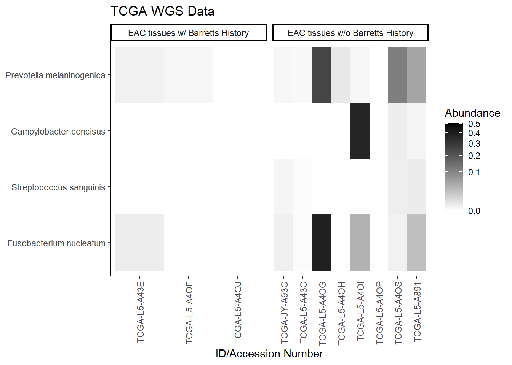
Stacked Bar Charts
All OTUs (RA > 0.001)
plot.dat <- dat.rna %>% filter(EACcomp != "0", Abundance > 0.001)%>%
dplyr::group_by(EACcomp, Genus)%>%
dplyr::summarise(
Abundance = mean(Abundance, na.rm=T)
)`summarise()` has grouped output by 'EACcomp'. You can override using the `.groups` argument.p1 <- ggplot(plot.dat, aes(x=EACcomp, y = Abundance, fill=Genus)) +
geom_bar(stat="identity")+
labs(title="TCGA RNAseq Data",
subtitle = "Genus Level Data",
x = "Tissue Group",
y="Average Relative Abundance") +
theme_classic()
p1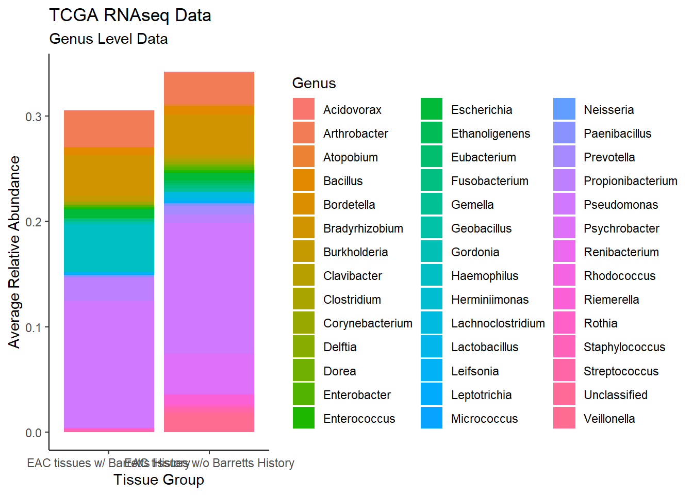
#ggsave("data/bar_tcgarna_genus.pdf", p1, units="in", height=23, width=16)plot.dat <- dat.rna %>% filter(EACcomp != "0")%>%
dplyr::group_by(EACcomp, Phylum)%>%
dplyr::summarise(
Abundance = mean(Abundance, na.rm=T)
)`summarise()` has grouped output by 'EACcomp'. You can override using the `.groups` argument.p1 <- ggplot(plot.dat, aes(x=EACcomp, y = Abundance, fill=Phylum)) +
geom_bar(stat="identity")+
labs(title="TCGA RNAseq Data",
subtitle = "Phylum Level Data",
x = "Tissue Group",
y="Average Relative Abundance") +
theme_classic()
p1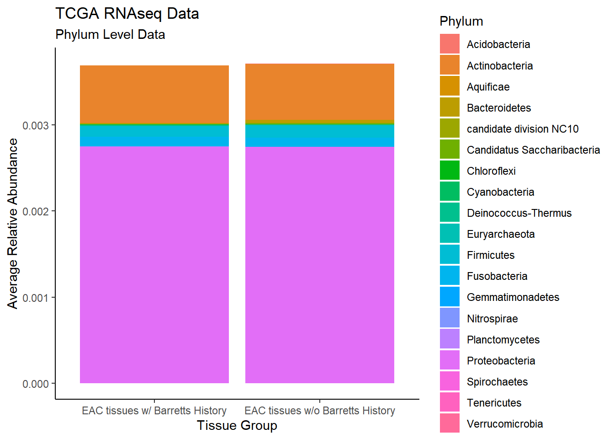
plot.dat <- dat.wgs %>% filter(EACcomp != "0", Abundance > 0.001)%>%
dplyr::group_by(EACcomp, Genus)%>%
dplyr::summarise(
Abundance = mean(Abundance, na.rm=T)
)`summarise()` has grouped output by 'EACcomp'. You can override using the `.groups` argument.p1 <- ggplot(plot.dat, aes(x=EACcomp, y = Abundance, fill=Genus)) +
geom_bar(stat="identity")+
labs(title="TCGA WGS Data",
subtitle = "Genus Level Data",
x = "Tissue Group",
y="Average Relative Abundance") +
theme_classic()
p1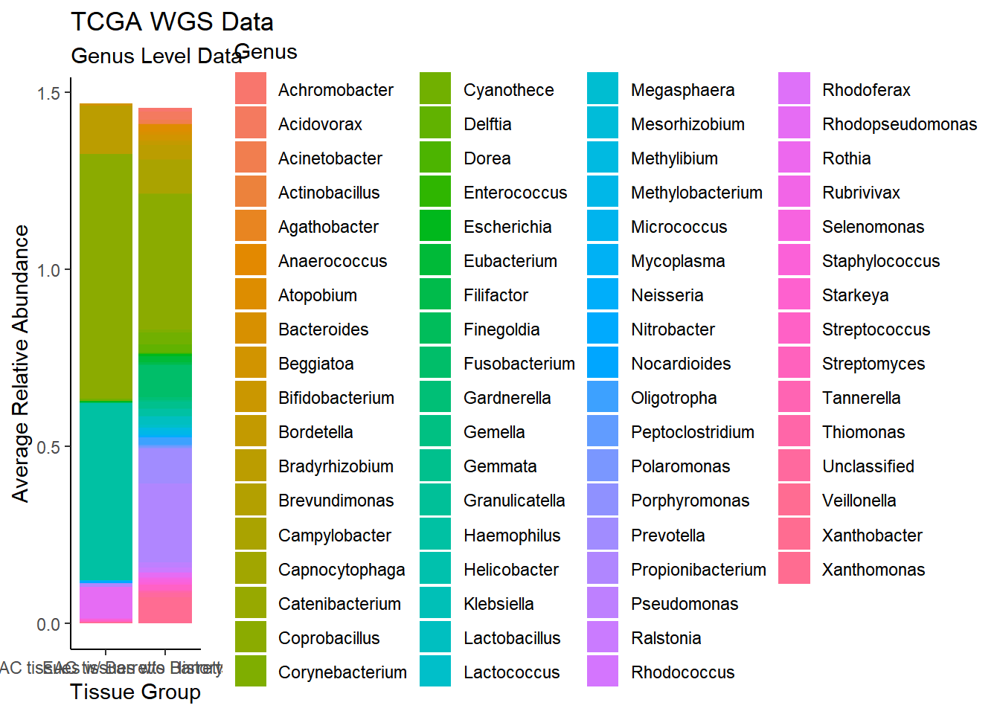
plot.dat <- dat.wgs %>% filter(EACcomp != "0")%>%
dplyr::group_by(EACcomp, Phylum)%>%
dplyr::summarise(
Abundance = mean(Abundance, na.rm=T)
)`summarise()` has grouped output by 'EACcomp'. You can override using the `.groups` argument.p1 <- ggplot(plot.dat, aes(x=EACcomp, y = Abundance, fill=Phylum)) +
geom_bar(stat="identity")+
labs(title="TCGA WGS Data",
subtitle = "Phylum Level Data",
x = "Tissue Group",
y="Average Relative Abundance") +
theme_classic()
p1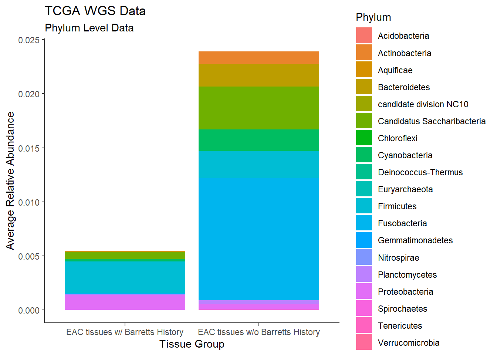
Specific OTUs
plot.dat <- dat.rna.s %>% filter(EACcomp != "0", is.na(OTU1) == F)%>%
dplyr::group_by(EACcomp, OTU1)%>%
dplyr::summarise(
Abundance = mean(Abundance, na.rm=T)
)`summarise()` has grouped output by 'EACcomp'. You can override using the `.groups` argument.p1 <- ggplot(plot.dat, aes(x=EACcomp, y = Abundance, fill=OTU1)) +
geom_bar(stat="identity")+
labs(title="TCGA RNA seq Data",
x = "Tissue Group",
y="Average Relative Abundance") +
theme_classic()
p1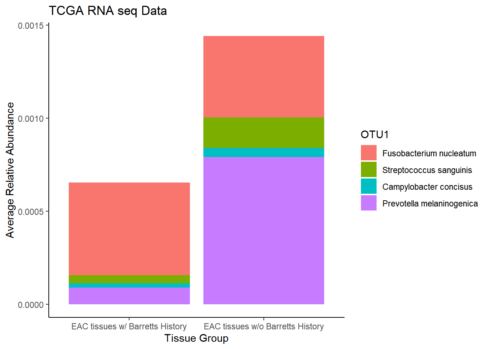
plot.dat <- dat.wgs.s %>% filter(EACcomp != "0", is.na(OTU1) == F)%>%
dplyr::group_by(EACcomp, OTU1)%>%
dplyr::summarise(
Abundance = mean(Abundance, na.rm=T)
)`summarise()` has grouped output by 'EACcomp'. You can override using the `.groups` argument.p1 <- ggplot(plot.dat, aes(x=EACcomp, y = Abundance, fill=OTU1)) +
geom_bar(stat="identity")+
labs(title="TCGA WGS Data",
x = "Tissue Group",
y="Average Relative Abundance") +
theme_classic()
p1
sessionInfo()R version 4.0.3 (2020-10-10)
Platform: x86_64-w64-mingw32/x64 (64-bit)
Running under: Windows 10 x64 (build 19042)
Matrix products: default
locale:
[1] LC_COLLATE=English_United States.1252
[2] LC_CTYPE=English_United States.1252
[3] LC_MONETARY=English_United States.1252
[4] LC_NUMERIC=C
[5] LC_TIME=English_United States.1252
attached base packages:
[1] stats graphics grDevices utils datasets methods base
other attached packages:
[1] cowplot_1.1.1 dendextend_1.14.0 ggdendro_0.1.22 reshape2_1.4.4
[5] car_3.0-10 carData_3.0-4 gvlma_1.0.0.3 patchwork_1.1.1
[9] viridis_0.5.1 viridisLite_0.3.0 gridExtra_2.3 xtable_1.8-4
[13] kableExtra_1.3.1 data.table_1.13.6 readxl_1.3.1 forcats_0.5.0
[17] stringr_1.4.0 dplyr_1.0.3 purrr_0.3.4 readr_1.4.0
[21] tidyr_1.1.2 tibble_3.0.5 ggplot2_3.3.3 tidyverse_1.3.0
[25] lmerTest_3.1-3 lme4_1.1-26 Matrix_1.2-18 vegan_2.5-7
[29] lattice_0.20-41 permute_0.9-5 phyloseq_1.34.0 workflowr_1.6.2
loaded via a namespace (and not attached):
[1] minqa_1.2.4 colorspace_2.0-0 rio_0.5.16
[4] ellipsis_0.3.1 rprojroot_2.0.2 XVector_0.30.0
[7] fs_1.5.0 rstudioapi_0.13 farver_2.0.3
[10] fansi_0.4.2 lubridate_1.7.9.2 xml2_1.3.2
[13] codetools_0.2-18 splines_4.0.3 knitr_1.30
[16] ade4_1.7-16 jsonlite_1.7.2 nloptr_1.2.2.2
[19] broom_0.7.3 cluster_2.1.0 dbplyr_2.0.0
[22] BiocManager_1.30.10 compiler_4.0.3 httr_1.4.2
[25] backports_1.2.0 assertthat_0.2.1 cli_2.2.0
[28] later_1.1.0.1 htmltools_0.5.1 prettyunits_1.1.1
[31] tools_4.0.3 igraph_1.2.6 gtable_0.3.0
[34] glue_1.4.2 Rcpp_1.0.6 Biobase_2.50.0
[37] cellranger_1.1.0 vctrs_0.3.6 Biostrings_2.58.0
[40] rhdf5filters_1.2.0 multtest_2.46.0 ape_5.4-1
[43] nlme_3.1-151 iterators_1.0.13 xfun_0.20
[46] ps_1.5.0 openxlsx_4.2.3 rvest_0.3.6
[49] lifecycle_0.2.0 statmod_1.4.35 zlibbioc_1.36.0
[52] MASS_7.3-53 scales_1.1.1 hms_1.0.0
[55] promises_1.1.1 parallel_4.0.3 biomformat_1.18.0
[58] rhdf5_2.34.0 curl_4.3 yaml_2.2.1
[61] stringi_1.5.3 S4Vectors_0.28.1 foreach_1.5.1
[64] BiocGenerics_0.36.0 zip_2.1.1 boot_1.3-25
[67] rlang_0.4.10 pkgconfig_2.0.3 evaluate_0.14
[70] Rhdf5lib_1.12.0 labeling_0.4.2 tidyselect_1.1.0
[73] plyr_1.8.6 magrittr_2.0.1 R6_2.5.0
[76] IRanges_2.24.1 generics_0.1.0 DBI_1.1.1
[79] foreign_0.8-81 pillar_1.4.7 haven_2.3.1
[82] whisker_0.4 withr_2.4.0 mgcv_1.8-33
[85] abind_1.4-5 survival_3.2-7 modelr_0.1.8
[88] crayon_1.3.4 rmarkdown_2.6 progress_1.2.2
[91] grid_4.0.3 git2r_0.28.0 reprex_0.3.0
[94] digest_0.6.27 webshot_0.5.2 httpuv_1.5.5
[97] numDeriv_2016.8-1.1 stats4_4.0.3 munsell_0.5.0